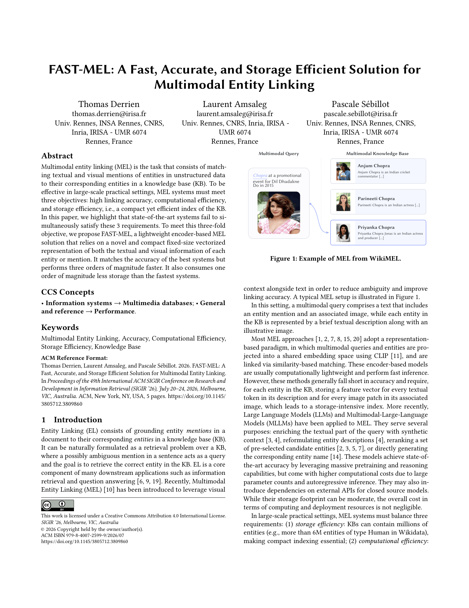

FAST-MEL: A Fast, Accurate, and Storage Efficient Solution for Multimodal Entity Linking
ACM SIGIR 2026 · Short Paper
An encoder-based approach to multimodal entity linking that represents text and image mentions as compact fixed-size vectors. FAST-MEL matches the linking accuracy of state-of-the-art systems while running orders of magnitude faster and requiring an order of magnitude less storage.